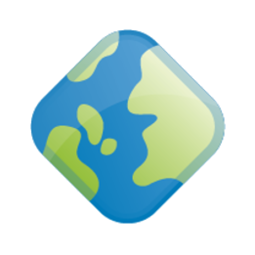

Joseph Kariuki
I am experienced in leveraging Geographic Information Systems, Remote Sensing and web tools to provide a robust synopsis for geospatial development. Iterative approaches to corporate strategy foster collaborative thinking to further the overall value proposition.
Experience
GIS Developer
Satellite Imagery processing. Processing of remotely sensed raw data into producing thematic data that can be incorporated in maps. This involves some statistical based analysis applied on the raw images to produce various products based on the need of the end-user.
Developing and maintaining of GIS portals. GIS portal is a web tool that is set up for the purpose of sharing spatial (location based) and non-spatial metadata info within an organization or to the public, commonly referred to as Spatial Data Infrastructure (SDI).
GIS Intern
GIS Mapping using Desktop GIS tools. Obtaining of raw vector and raster data, editing data to correct errors, performing quality assessment and producing a map as the end product.
Map revising using satellite data fro Sentinel2 which is open source. Task with the objective of producing accurate maps by performing comparative analysis between the previous data and features within an area of interest on the imagery.
Satelite image processing using ENVI and Erdas IMAGINE softwares for production of Land Use Land Use Cover (LULC) Maps
Assisted in developing GIS portal for sharing geographic data.
Intern
Introduction to ArcGIS platform. Platform included ArcGIS for Desktop used to read and edit spatial data on desktop, ArcGIS Server used to serve spatial data and its metadata on web, ArcGIS Online used to render and uload spatial data over the world wide web.
Introduction to ENVI and ENVI-LiDAR. This is a Remote Sensing tool used for satellite image processing, analysis and production of various products such as Land Use Land Use Cover maps among others while using ENVI LiDAR to process LiDAR (Light Detection and Ranging) data.
Development and maintenance of geodatabases, facilitating storage of GIS data in bulk and supporting CRUD (Create Read Update Delete) operations on GIS databases.
Education
Nyeri High School
Skills


- 
Interests
Apart from being on GIS and Remote Sensing work, I enjoy most of my time listening to music, watching movies and playing video games.
When indoors, I check for online trends in technology and watch Sci-Fi/fantasy genre movies and television shows, I am an aspiring chef, and I spend a large amount of my free time exploring the latest technolgy advancements in the GIS world.
Awards
- Cerificate of attendance for FOSS4G Europe 2017
- Certificate of Participation for IGAD Climate Challenge Hackathon (#Hack4Climate2016)
- Certificate of Participation in Regional Training of Collect Earth for Global Trends on Tree Cover, Forest and Land Use (2016)
- Certificate of Participation in 3 rd ESRI Eastern Africa Education GIS Conference (2015)
- 2015 Contributor Award for HERE Map Creator Expert Community
- Certificate of Participation in Annual GIS Day from Geospatial Engineering Students Association (2015)